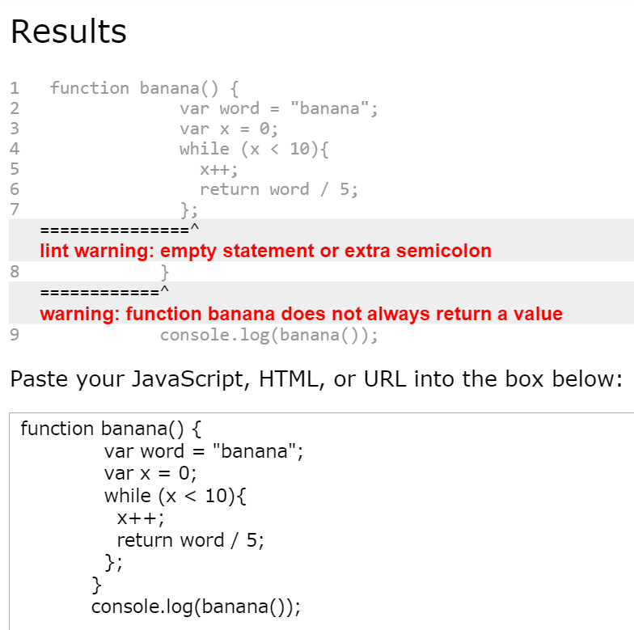
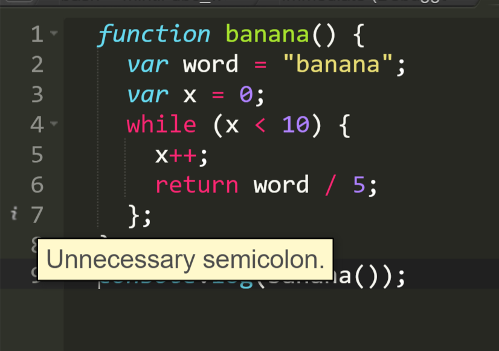

A Close and Brief Comparison to JavaScript and Ruby
Error Syntax
One struggle I'm quickly realizing is that JavaScript does not provide none of the nice error syntax I have grown accustomed to with Ruby.
It appears I'm not alone. If one simply Google searches "Help with JavaScript Syntax" they would find lots of results that provide help in this cryptic void. Before we get started on talking about some of these great tools I found, let's first look at a few examples.
In the code listed below you will see a simple Ruby method which includes some variables and a while loop. I want to do is loop banana and divide it by 5 for 10 times while x is less than 10.
Ruby Be All Like...
-----INPUT-------------------------------------
def banana
word = "banana"
x = 0
while x < 10
"banana" / 5
x += 1
end
end
p banana
-----OUTPUT-------------------------------------
1: def banana
2: word = "banana"
3: x = 0
4: while x < 10
=> 5: "banana" / 5
6: end
7: end
NoMethodError: undefined method `/' for "banana":String
from solution.rb:5:in `banana'
Ruh roh. Looks like something is wrong with my method! Looking above you will see the output of my Ruby method. I have an error on line 5, and it's relating to me trying to use '/' for a string. Hmmm. What could this mean?
I'm pretty sure that I can divide a string... let me look that up! When looking in the book, Learn to Program by Chris Pine, it mentions how a string can be added or multiplied, but nothing about dividing. Nevertheless, this gives me enough info to move forward with my debugging. It seems that if I want to divide a string, I'm going to have to use some other processes to get what I want. I may want to go back to psuedocoding to get my logic down. I've got options, and that helps.
But what if I wanted to write this same exact method as a function in JavaScript? Please take a look at the code below. You will see a lot of the essence is still there. I have my function named, I have my two variables, and I also have the same set up for my while loop. We invoke my function with a console.log to return a the functions value. Awesome! let's see what we get!
JavaScript Be All Like...
-----INPUT-------------------------------------
function banana() {
var word = "banana";
var x = 0;
while (x < 10){
x++;
return word / 5;
};
}
console.log(banana());
-----OUTPUT-------------------------------------
NaN
>
...NaN...?
What does this mean? Is JavaScript on a strict break and not what to run this? (Me: You should run this. JavaScript: NaN...) What does this mean?
Turns out NaN means Not A Number. Duh, I am not working with numbers, I'm working with a string in the variable word. Where do I go from here? What's breaking?
We can try using some sources that have been built to more throughly check for JavaScript mistakes.
JavaScript Lint
I have by no means exhausted all of the resources available for JavaScript debugging. However, JavaScript Lint feels like it's the most user-friendly and widely inclusive package for understanding your code. There's an online editor to quickly check JavaScript, HTML, or URLs to see what's breaking. You can download it for several operating systems, for several IDEs, and even use it with the command line.
When I copy the JavaScript I wrote above into JavaScript Lint using their online option
Ah okay, so I have a function that does not always return a value. This is certainly closer than what I had before with NaN. I have a few more steps to fixing my problems. But I can work with this!
Are there other resources we could check out?
JSHint
JSHint seems to be another popular option. They have a list of several notable companies and projects that use JSHint. It doesn't seem to be as straight-forward newbie friendly as JavaScript Lint's online version, but guess what? It's already built into Cloud 9, and online IDE I use for a lot of my programming. I like that ease. :)
JSHint sounded promising, so I pushed forward in exploring implementations with this. I found SublimeLinter 3 which is a framework for linting multiple languages. It feels like I found the holy grail in what I need. This is a plugin for Sublime Text 3 that not only introduces you to the world of linters (these little programs used to help with our programming syntax) but also to the world of Sublime plug-ins!
Sublime Text Tutorials #19 - How To Use SublimeLinter 3
I used the video link above to help walk me through setting it up. Reading is fundamental with getting this to work, so take your time and read through SublimeLinter's documentation. We're still going to be using JSHint, but this is simply one way to use it. SublimeLinter also allows for additional syntax plugins to be installed, which is something I may consider in the future. That means we can also use JavaScript Lint, and any other kinds we find along the way.
Final Verdict...
With JavaScript we need to stick our necks out more to write accurate code. As we learn, it's important to develop good practices and have personal defenses set up to catch any errors. Don't give up on any bugs you find, but try to take approach the problem in a different direction than what you're familiar with from Ruby.